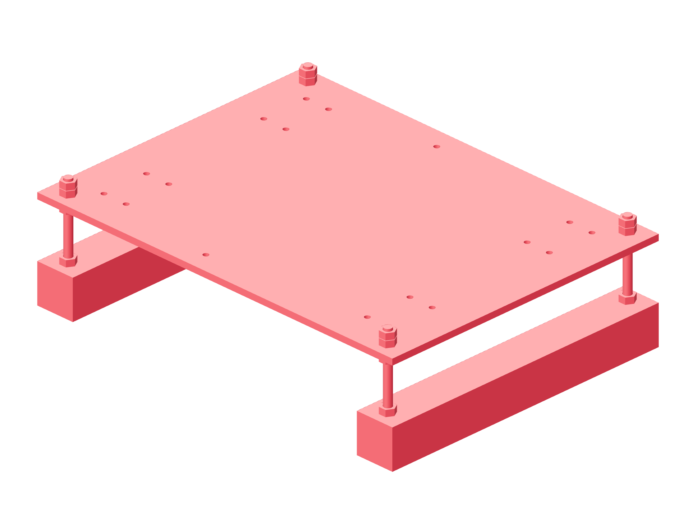

Observation / two stages142 / 179
Build two adjustable metal camera bases
Each fixed plate sits above two horizontal 4040 risers on four steel height posts. Raising the whole level stage aligns it to the seam without tilting the camera.
AddPer stage: fixed plate · 2 risers · 4 M8 × 100 posts · 20 M8 nuts / 24 washers · 8 T-nuts · 4 corners / M8 × 16 / M8 × 75
Tools / setup6 mm hex · 13 mm wrench · level · rule

- Through-bolt both risers to the bench with their metal corners. Start all four height posts in the governed metal T-nut anchors.
- Set the lower support nuts to one level height, starting at a 55.70 mm plate-to-riser gap.
- Fit the fixed plate with washers and lock its upper/lower nuts at all four posts.
- Keep the post height adjustment accessible until the actual camera and seam are visible.
Ready when
The fixed plate is horizontal, all four posts are locked at the riser and plate, and its adjustable gap is within 20–70 mm. An unlocked or tilted plate moves the optical datum. Correct the metal post stack before adding rails.